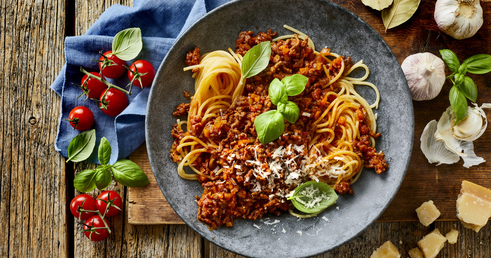

Spaghetti Bolognese

Spaghetti Bolognese when complete
Ingedients to Spaghetti Bolognese
- Spaghetti 200g
- Minced Meat 500g
- Tomatoes
- Basil
- Parmasan
- Onion 1
How to prepare the dish
- Chop onion fine and cook it for 2 minutes
- When cooked, add the minced meat and cook till done
- Add Tomatoes and let simmer for 15 minutes
- Meanwhile simmering, boil spaghetti according to package instructions
- When done, Bon appetit!